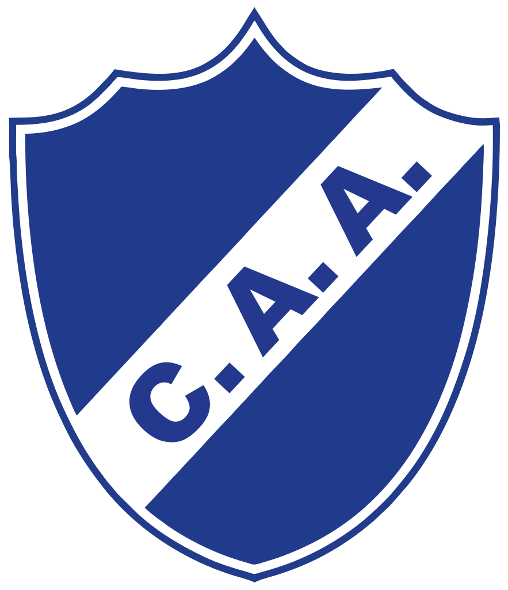
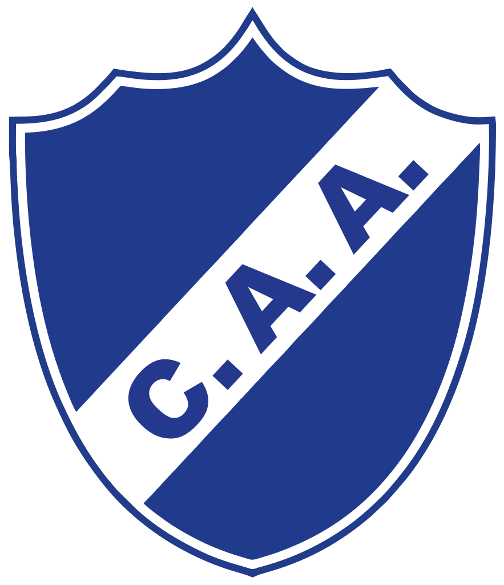

Agustin Rossi | Guillermo Sara | Javier Bustillos | Manuel Roffo.
Paolo Goltz | Emanuel Mas | Lisandro Magallan | Frank Fabra | Agustin Heredia | Julio Buffarini | Santiago Vergini | Leandro Jara.
Fernando Gago | Pablo Perez | Edwin Cardona | Nahitan Nandez | Wilmar Barrios | Gonzalo Maroni | Junior Benitez | Emanuel Reynoso | Julian Chicco | Sebastián Perez.
Cristian Pavón | Darío Benedetto | Cristian Espinoza | Ramón Ábila | Walter Bou | Carlos Tevez.
Director técnico: Guillermo Barros Schelotto. Ayudantes de Campo: Gustavo Barros Schelotto y Ariel Pereyra. Entrenador de arqueros: Juan José Romero. Preparador físico: Javier Valdecantos. Preparador físico alterno: Pablo Matamalas. Médicos: Jorge Batista, Pablo Ortega Gallo y Gerardo Godoy. Kinesiólogos: Leonardo Betchakian y Sergio Brozzi. Psicóloga: Mara Villoslada. Masajistas: Carlos Cappella y Pablo Rodríguez. Utileros: Cristian Ale Salem, Mario Benetti y Ariel Critelli.
 Boca juniors vs. Alvarado 
Fecha 1/8 21:10hs partido por la primera ronda de la copa Argentina.
Boca juniors vs. Alvarado 
Fecha 1/8 21:10hs partido por la primera ronda de la copa Argentina.
 Boca juniors (Arg) vs. Libertad (Par)
Boca juniors (Arg) vs. Libertad (Par) Fecha 8/8 19:30hs partido por los octavos de final (ida) de la copa libertadores.
Fecha 8/8 19:30hs partido por los octavos de final (ida) de la copa libertadores.
 Libertad (Par) vs. Boca juniors (Arg)
Libertad (Par) vs. Boca juniors (Arg) Fecha 30/8 19:30hs partido por los octavos de final (vuelta) de la copa libertadores.
Fecha 30/8 19:30hs partido por los octavos de final (vuelta) de la copa libertadores.